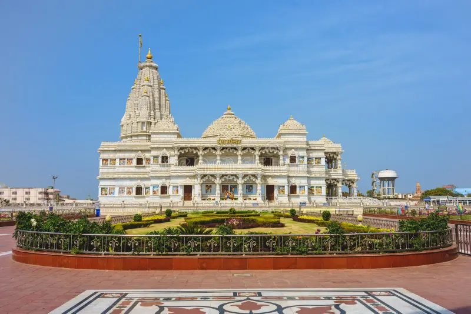
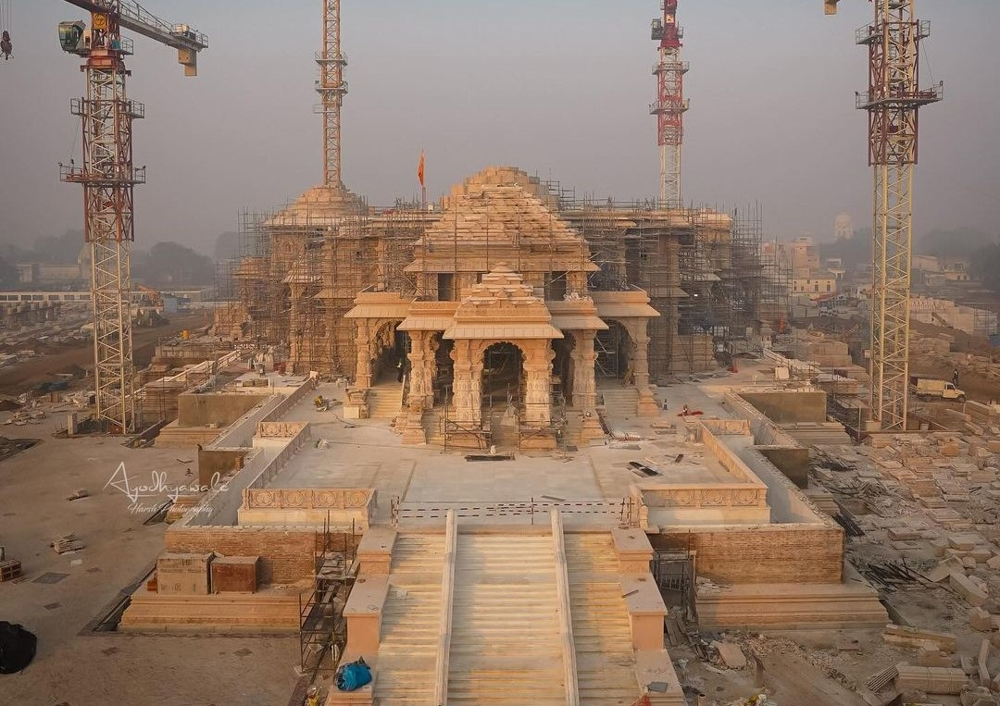
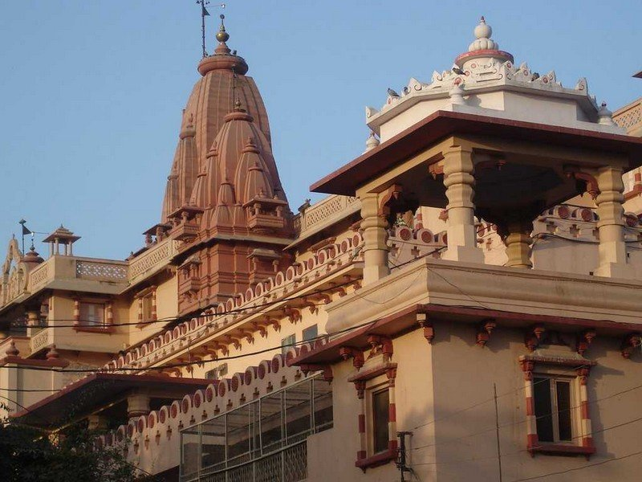
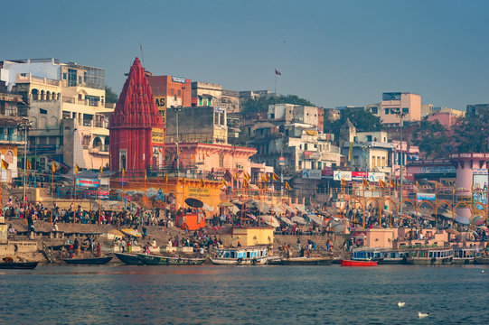
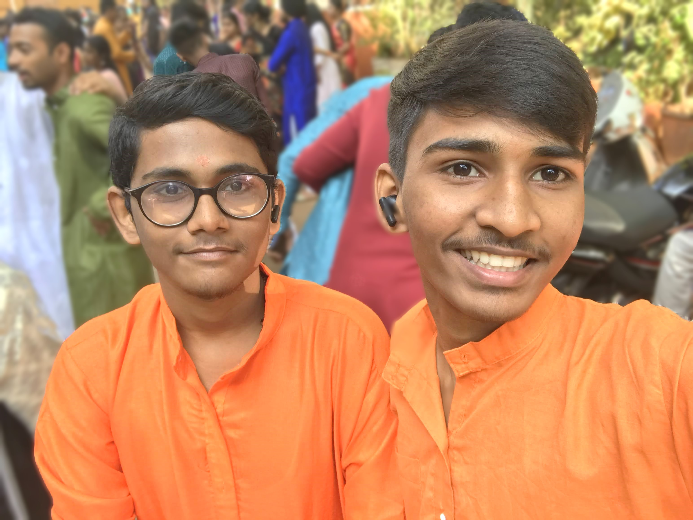

Uttar Pradesh, often abbreviated as UP, is a state located in the northern
part of India. It is the most populous state in the country and plays a
crucial role in Indian history, culture, and politics.
popular places in uttar pradesh

prem mandir :- Prem Mandir is a Hindu temple located in the town of Vrindavan in the Mathura district of Uttar Pradesh,
India. The temple is dedicated to Lord Krishna and Radha

Ayodhya :-
Believed to be the birthplace of Lord Rama, Ayodhya is a significant pilgrimage site for Hindus.
The city has historical and religious importance and has been a center of cultural and political attention.
22 january 2024 will open.
most languages used : hindi and bhojpuri food : kachori , litti chokha , chat

krishn janmbhumi :-
Mathura has been considered an important pilgrimage site for Hindus.
The Krishna Janmabhoomi temple in Mathura is believed by many to be the exact location where Lord Krishna was born.

kashi :-
ancient city of Varanasi, also known as Benares or Kashi, located in the northern Indian state of Uttar Pradesh.
Varanasi is one of the oldest continuously inhabited cities in the world and holds immense
religious and cultural significance, particularly in Hinduism.
Additional Place in uttar pradesh for visit
*Taj Mahal (Agra): One of the most iconic symbols of India, the Taj Mahal is a UNESCO World Heritage Site
and a mausoleum built by the Mughal Emperor Shah Jahan in memory of his wife Mumtaz Mahal.
*Vindhyachal :Vindhyachal a sacred town situated on the banks of the Ganges River in the Mirzapur district of Uttar Pradesh, India.
The town is renowned for its religious significance and is considered an important pilgrimage destination
*mansarovar:
Maan 'means'anger' and 'Sarovar' means lake or pond hence this place is called Maan Sarovara,
because Srimati Radha Rani came here in the mood of Maan. Maan is when Radharani pretends to be angry from Sri Krishna.
On learning this Sri Krishna by masmerizing talk He made up with Sri Radharani..
*nidhivan:
Nidhivan is believed to be the sacred abode of Lord Krishna and Radha.
It is said that the trees in Nidhivan are divine and have mystical properties.

piyush chaubey :- for hiring or about me click the link :-
Piyush portfolio
prashant dwivedi :- for hiring or about me click the link :-
Prashant portfolio
Contact us: xyz@gmail.com
© copyright reserved since 2023